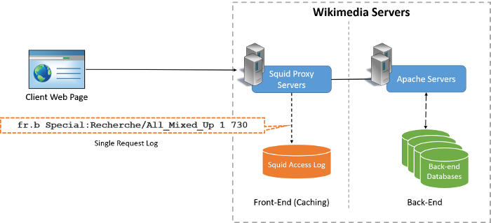

Introduction
Learning Objectives
This project will encompass the following learning objectives:
- Explore a large-scale dataset
- Process part of a large-scale using sequential programs on a cloud sequentially
- Make interesting inferences from the processed dataset
- Understand the limitations of sequential methods to analyse large volumes of data
In this first project, we will get a feel for big data by diving head first into analyzing a large dataset, specifically hourly page view statistics from Wikipedia.
Wikimedia maintains hourly page view statistics for all objects stored in Wikimedia servers as publicly accessible datasets. We will use these statistics to analyse page-view trends and derive the trending topics on wikipedia for a particular time range.
Exploring the Dataset
A simplified diagram of a page access from Wikimedia. More Information.
Every request made to Wikipedia's servers is serviced by a squid cache proxy, which also logs the request. These logs are shared publically every hour in flat text files. Each line of this file corresponds to a single access from the Wikimedia servers in the following format:
<project name> <page title> <number of accesses> <total data returned in bytes>
<project name> has two parts, a language identifier and a subproject suffix. The following abbreviations are used in the subproject suffix:
- (no suffix) : wikipedia
- .b : wikibooks
- .d : wiktionary
- .m : wikimedia
- .mw : wikipedia mobile
- .n : wikinews
- .q : wikiquote
- .s : wikisource
- .v : wikiversity
- .w : mediawiki
For Example, the following line:
fr.b Special:Recherche/All_Mixed_Up 1 730
denotes that from the French Wikibooks page, the page
Special:Recherche/All_Mixed_Up was accessed once and 730 bytes were transferred in total. The article's title in this line is Special:Recherche/All_Mixed_Up.
In this project, we will focus on analyzing the page view logs from November 2014. The data has been uploaded to the s3 location: s3://wikipediatraf/201411-gz/. You can use aws-cli, s3cmd or S3 Browser to explore the location.
Refer to the page Amazon S3 in the Project Primer for details on accessing S3. The dataset contains one file for every hour in November 2014, making 720 files in total.
Filtering an Hour's worth of Data
This week, we will analyze an hour's worth of data from the logs and find out the most popular English Wikipedia articles. If you are working with EC2 instances for the first time, please refer to the Amazon EC2 page in the Project Primer and the Amazon EC2 Getting Started Guide for help.
Resource Tagging
For this project, assign the tag with Key: Project and Value: 1.1 for all resources
Task to Complete:
Provision a t1.micro instance using the AMI ID: ami-a2dfa0ca. If you have trouble finding the AMI, ensure that you have configured EC2 to work in the US-East-1 (N. Virginia) region. The username to SSH in is ubuntu
For project 1.1, we have downloaded a single hour's worth of logs (and unzipped) in the following folder.
/home/ubuntu/Project1_1/
The file contains all of the pages from all WikiMedia projects. Our aim is to identify trending topics from the English Wikipedia articles. In order to do this, develop a script or write a program in any language to:
-
Filter out all pages that are not english wikipedia. (This means that the log lines should start with
en(case sensitive), without any suffix attached).
-
There are many special pages in wikipedia that do not need to be considered when trying to find trending topics. Exclude any pages whose title starts with the following strings:
Media: Special: Talk: User: User_talk: Project: Project_talk: File: File_talk: MediaWiki: MediaWiki_talk: Template: Template_talk: Help: Help_talk: Category: Category_talk: Portal: Wikipedia: Wikipedia_talk:
-
Wikipedia policy states that all English articles must start with an uppercase character. Filter out all articles that start with lowercase English characters. You may notice that some articles have non-english titles, you should choose to retain them in the analysis.
-
You may also get results which refer to image files, exclude any article that ends with the following extensions (Keep all other extensions intact). (.jpg, .gif, .png, .JPG, .GIF, .PNG, .txt, .ico). Do not use case-insensitive matching– remove exactly those file extensions.
-
Finally, there are some boilerplate articles which are returned by Mediawiki, which should be excluded as well. Articles with titles that exactly (case sensitive) match any of the following strings should be excluded:
404_error/ Main_Page Hypertext_Transfer_Protocol Search
-
Once the filtering is done, output the remaining articles in the following format:
<page title>\t<number of accesses>
Notes:
- You may notice that the data set consists of files beginning with languages
en,EnandEN. Apply the filter to onlyen(case sensitive). \tstands for the tab character.- The output should be sorted in ascending the order of the number of accesses.
- If you want to test whether a given line should be retained or removed, please visit this link.
Grading
After completing the above exercise, you are expected to do some analysis of results and answer certain questions for this week's checkpoint quiz. The checkpoint quiz questions are present in the file /home/ubuntu/Project1_1/runner.sh. You can verify and submit your results using the given auto-grader in the AMI. To use the autograder, do the following:
-
Go to the auto-grader folder located at
/home/ubuntu/Project1_1 -
The auto-grader consists of three files,
runner.sh,submitterandreferences. You have permissions to editrunner.shandreferencesfiles. -
Edit the script
runner.shto include the commands/code used to answer the checkpoint questions. Using bash scripting is recommended. Do not move any of the provided files. If you are using any external scripts, ensure that you are calling the correct scripts fromrunner.sh. Please ensure that you are placing all your code in the same folder and also assume that the dataset is present in the current folder. Please read the dataset in your code assuming it's present in the current folder (i.e do not use absolute path for accessing the dataset) -
Edit the text file
referencesto include all the links that you referred to for completing this project. Also include the Andrew IDs of all the other students who you might have discussed general ideas with when working on this project in the same file. -
You can run the autograder by typing
./runner.shfrom the autograder folder. Running this script should print out the answers to all the questions. Please ensure that the answers are printing correctly before using submitter. -
Once you have completed all the questions, you can submit the answers to the evaluation system using the auto-grader executable
submitter. Run the executable using the command./submitterfrom the autograder folder. After running this command, you should be able to see your scores on the website in a few minutes. There is no limit on the number of submissions allowed before the project deadline. However, each submission must be separated by at least 60 seconds.
Project Grading Penalties
The following table outlines the violations of the project rules and their corresponding grade penalties for this project.
| Violation | Penalty of the project grade |
|---|---|
| Failing to complete this project using a t1.micro EC2 instance | -10% |
| Failing to tag your instance for this project | -10% |
| Attempting to hack/tamper the autograder in any way | -100% |
| Using more than $5 to complete this project | -10% |
| Using more than $10 to complete this project | -100% |